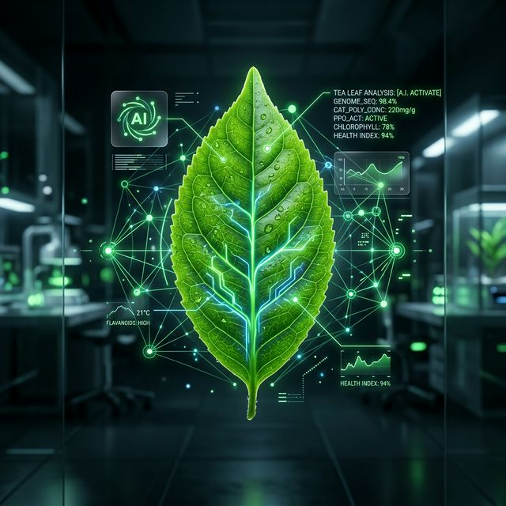

TEAI (Tea Expert AI) is a multi-module artificial intelligence platform supporting end-to-end quality assessment and decision-making. We replicate and enhance human expertise in tea production using advanced ML and Computer Vision.

Most tea quality assessments rely on expert tea tasters, making the process subjective, inconsistent, and difficult to scale across large production environments.
Existing computer vision models mainly focus on classification (e.g., grades) rather than generating rich, human-like descriptive outputs used in real tea tasting.
Current AI models are mostly static and do not improve based on real expert corrections or preferences over time.
Manual inspection of plucking quality is time-consuming and not scalable for high-volume industrial operations.
Traditional withering relies on manual judgment or simple measurements like weight loss, without leveraging predictive analytics.
Existing solutions treat pricing, quality assessment, and contamination detection as separate processes.
How can we design an integrated, automated, and adaptive system that standardizes tea quality evaluation, optimizes production processes, and enhances safety across the industry?
Manual tasting leads to inconsistency
Difficulty scaling across large volumes
Lack of real-time contamination detection
Advanced CV to replicate human-like tea evaluation.
Continuous system improvement via RL guiding.
Real-time detection and classification of standards.
Monitoring and prediction of moisture content.
Create an integrated AI-based system that combines computer vision, machine learning, and IoT to enhance tea quality evaluation and industrial decision-making.
Develop a vision-based model capable of analyzing tea appearance, generating human-like descriptive feedback, and adapting via RL based on professional corrections.
Design a real-time grading system that identifies leaf/bud combos and classifies plucking quality into standard categories directly from the conveyor.
Build intelligent models to estimate moisture content and recommend optimal withering durations based on environmental and visual data.
Develop predictive models to estimate market prices using historical data, while concurrently implementing real-time systems to detect foreign particles in production.
Track the progress of our research project through key assessment points and deliverables.
Topic Assessment Form presentation to finalize the research topic and scope.
Marks: N/A
Initial research proposal outlining objectives, methodology, and expected outcomes.
Marks: 6%
First progress review covering literature survey and preliminary findings.
Marks: 15%
Second progress review with data collection results and analysis.
Marks: 18%
Assessment of the research project website.
Marks: 2%
Final presentation and oral defense of the research findings and project.
Marks: 20%
Submission of the final research paper detailing the project, findings, and conclusions.
Marks: 10%
Submission of the comprehensive final report document.
Marks: 4%
Maintain a detailed logbook documenting research activities and progress.
Marks: N/A
Access all research documents, reports, and supporting materials for this project.
Topic Assessment Form for Research Project
Individual research proposal documents for each team member
Standard checklist items covered entirely.
Submission of comprehensive reporting document.
Scientific document detailing the implementations.
View slides and materials from past research presentations.
Initial project proposal and research methodology overview
View SlidesLiterature review findings and preliminary data collection
View SlidesMeet the dedicated research team working on automating tea quality with AI.
Have questions about the TEAI platform? Reach out to us!